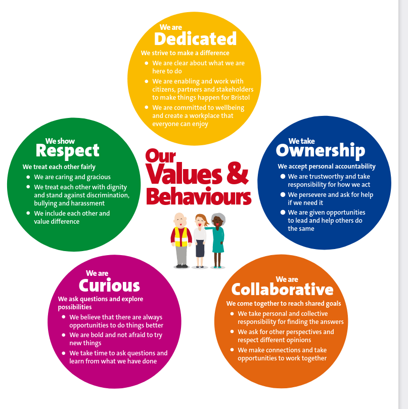
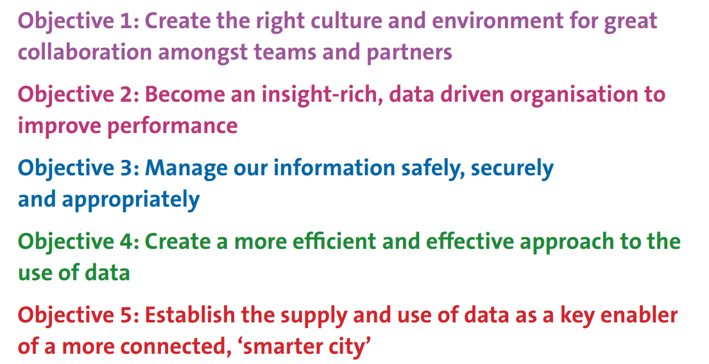
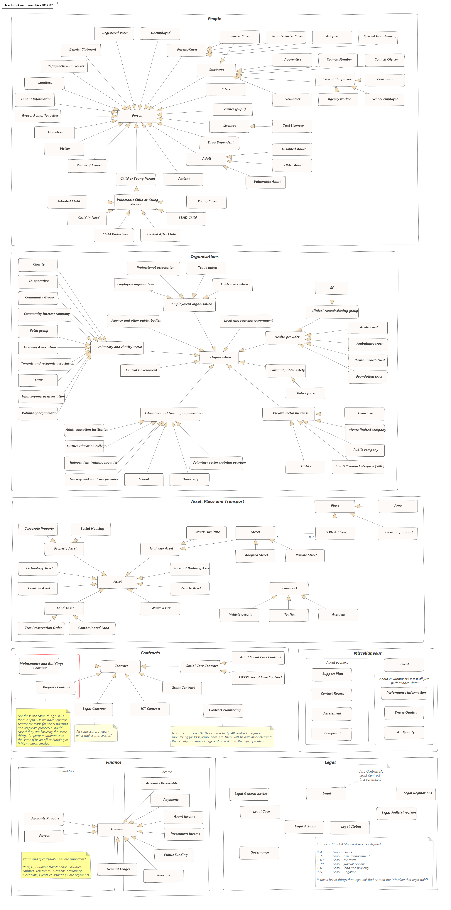
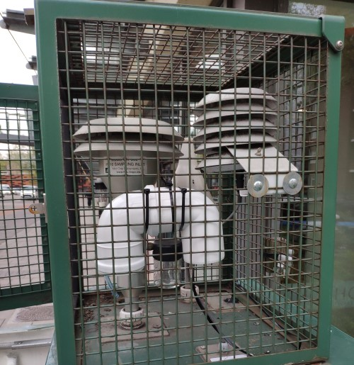
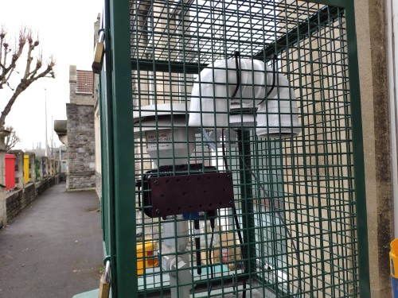

| Co - location Site Summary | |
|---|---|
| Site description | Pollutants |
| AURN St Pauls - 452 | |
| The monitoring station is located within a self contained air conditioned unit within the car park of a day nursery. The monitoring station is approximately 30 metres south east of Wilder Street which is a lightly trafficked urban back street. The surrounding area is primarily residential with some commercial premises in the immediate vicinity. | PM2.5, PM10 |
| Parson Street School - 215 | |
| The Parson Street School monitoring site has been operating since 2002 and was selected as a roadside site that represents residential exposure to relatively high concentrations of traffic generated pollution. The sample inlet is approximately 1 metre from ground level and four metres from the kerb of Bedminster Road where traffic queues for the traffic lights | PM2.5 |
| Temple Way - 500 | |
| Roadside monitoring station beside multi-lane section of the A4044 (Temple Way). This is a major route in and out of Bristol city centre. | PM10 |
Summative Portfolio: L4
1 Introduction
My name is Steve Crawshaw. I am a project manager for Bristol City Council and I have undertaken the L4 Apprenticeship (Data Analyst) to improve my knowledge and skill in data analytics with a view to undertaking the L7 apprenticeship and achieving a role as a data scientist.
I have worked for Bristol City Council (BCC) since 1998 in essentially the same role, although I was seconded to another organisation between 2013 and 2016. My main role now is managing a network of air quality monitors and the data that they generate. This will be the subject on which I will focus for the summative portfolio.
2 Employer: Bristol City Council
Bristol City Council is a large unitary local authority in the South West of England.
2.1 Goals, Vision and Values
Bristol City Council’s Corporate Strategy outlines a vision of driving an inclusive, sustainable and healthy city of hope and aspiration where everyone can share the city’s success. It also describes the activities required by law.
The Corporate Strategy’s main priorities are informed by 5 key principles.
- Development and delivery
- Environmental sustainability
- Equality and inclusion
- Resilience
- World-class employment
It’s also arranged around 7 main themes:
Children and young people: A city where every child belongs and every child gets the best start in life, whatever circumstances they were born into.
Economy and skills: Economic growth that builds inclusive and resilient communities, decarbonises the city and offers equity of opportunity.
Environment and sustainability: Decarbonise the city, support the * recovery of nature and lead a just transition to a low-carbon future.
Health, care and wellbeing: Tackle health inequalities to help people stay healthier and happier throughout their lives.
Homes and communities: Healthy, resilient, and inclusive neighbourhoods with fair access to decent, affordable homes.
Transport and connectivity: A more efficient, sustainable, and inclusive connection of people to people, people to jobs and people to opportunity.
Effective development organisation: From city government to city governance: creating a focussed council that empowers individuals, communities, and partners to flourish and lead.
Bristol City Council is currently a mayoral - led authority. The current Mayor, Marvin Rees has set out values for the organisation as shown below.

2.2 How BCC Uses Data
BCC is a large and complex organisation dealing with a wide range of functions, from managing highways and planning applications to looking after vulnerable people. It follows that multiple systems and approaches exist for managing data across the organisation, many of which have evolved over time and have not been centrally planned or managed.
A recently published “Data, Insight and Information Strategy” sets out the strategic direction and objectives for the council in this area:
 The strategy aims to deliver these objectives by developing a single analytics team to deliver insights across the organisation and by consolidating the disparate and distributed datasets across the council into a corporate data lake with analysis being done on one data analytics platform (Power BI). Several projects are under way to deliver this change.
2.3 Data Architecture
No specific document exists about BCC’s data architecture, however there is an information asset taxonomy, which is summarised in the diagram below. This was developed in 2017 by an officer who has now left BCC so the information may be somewhat outdated.

Much of this data architecture is not of direct relevance to my work as it pertains to other departments and functions. In my own work area, the main data architecture is summarised as follows:
- 182 passive samplers (Diffusion tubes) providing monthly concentrations of pollutants (NO2)
- MS Access database to hold diffusion tube and monitoring network meta data on site
- A network of 8 real time air quality monitors (analysers)
- 4G Telemetry to connect these devices to:
- A proprietary communications software suite (Envista Commcentre)
- A database client and analytics program (Envista ARM)
- A SQL server database hosted on Azure
- An open data (OD) platform provided by Opendatasoft
- FME and FME Server processes to Extract, Transform and Load (ETL) air quality data to the open data platform
- Dashboards, visualisation and analytics delivered through the OD platform
- Bespoke reporting and ETL pipelines delivered through R, sourcing data through the OD portal and the Envista database
2.4 Security Standards and Policies
The over - arching Information Governance Framework outlines roles and responsibilities, policies and procedures, along with best practice and standards for managing the Council’s information assets. This has been developed to take account of the standards set by external organisations, such as the NHS in respect of the transition of Public Health to the Council and the requirements of the Public Sector Network (PSN) Code of Connection (CoCo).
The framework consists of the following areas:
- IGF Principles
- The Information Governance Strategy.
- Appropriate Information Governance Responsibilities.
- Information Asset Ownership
- An Information Governance Structure.
- Effective Information Governance policies and procedures.
- An Information Asset Register
- An Information Risk Register
- Information Governance communication and training.
There are a number of policies and procedures in the framework which deliver the outcomes of the Information Governance Strategy, including:
- Instant Messaging Policy
- Acceptable Use Policy
- Training, Awareness and Development Procedure
- Agile or Teleworking Policy
- Logical Access Control Policy
- Physical Access Control Policy
- Information Security Incident Reporting Policy
- Subject Access Request Policy
All the policies and procedures are hosted on a “metacompliance” platform, which manages access and control of the policies and ensures that relevant staff have read and agreed to the policies.
3 My Role: Air Quality Project Manager
My official job title is “Project Manager”. This is currently under review, partly because the extent of actual project management activity is quite limited. The majority of my time is spent managing a network of air quality monitors and the data that arises from the network.
3.1 Key Deliverables
The deliverables for which I am responsible are summarised as follows:
- Data capture rates exceeding 85% for continuous monitoring, 75% for passive.
- Monthly data cleaning (ratification) of continuous data.
- Annual reporting of air quality data.
- Calculation of Key Performance Indicators (KPIs) for air quality.
- Developing or revising KPIs as necessary.
- Ad hoc analysis and summaries of air quality data to support other programmes.
- Ensuring all relevant air quality data are published on the Open Data Portal.
- Ensuring all relevant technical guidance is followed in relation to air quality management.
- Responding to relevant requests from stakeholders for air quality data and analysis.
- Delivery of specific projects such as “Slow the Smoke”
3.2 Key Skills and Knowledge
The key skills and knowledge for my role are as follows:
3.2.1 Knowledge
- A good understanding of the legal framework for air quality management in the UK.
- Familiarity with the relevant technical guidance on assessing air quality.
- Knowledge of air quality policy and interactions with other domains like transport.
- An understanding of the development management (land use planning) process in the UK including Environmental Impact Assessment (EIA).
- An understanding of the principles of open data and legal framework for public access to data.
3.2.2 Skills
- Processing and analysing medium sized (up to 10 million observations) data sets
- SQL (SQL server, ODSSQL and MS Access)
- Excel
- HTML, Javascript and CSS for web development of open data products
- R - packages
openair,openaq,sf,timetk,fastverse,deweatherandtidyverseare relevant to the air quality domain - FME and FME Server for automating web services and data integration
- Time series analysis
- Network telemetry: IP, analogue, wireless, Teltonika RMS
- Technical report writing and comprehension of technical reports relating to the domain
- Communication skills - ability to report technical information to non - specialists
- Project management for small and medium sized projects
- Technical skills related to installation, maintenance and quality control of air monitoring instruments
- Negotiation skills for contract management and securing outcomes in the planning process
3.3 Strengths and Weaknesses
3.3.1 Strengths
- Long experience in the domain and a good level of skills and knowledge
- Strong work ethic
- Motivation to deliver and improve services and air quality
- Wide range of contacts internally and externally
- Collaborative approach to working
3.3.2 Weaknesses
- Wide, rather than deep data skill set
- Limited understanding of statistical theory and advanced analysis
- No exposure to team environment of other data analysts so lacking peer support
- Isolated from corporate data analytics functions
- Limited employer incentive to improve skills
3.4 Areas for Improvement
- Improved understanding of statistical theory and learning
- Power BI (corporate data analytics tool)
- Azure (corporate data platform)
- Python and PANDAS for comprehensive tooling of data science operations
4 Portfolio Projects
I have identified four projects which align with business and apprenticeship progress review objectives. They are focussed on creating data products which will enhance business processes and increase confidence in our data and analysis. They are summarised below.
| Objective 1 To develop a robust pipeline for statutory reporting of air quality data | ||
|---|---|---|
| SMART | Description | Notes |
| Specific | Statutory annual reporting of air quality is a business need and requires a range of data sources, transformations and analyses. The current process is piecemeal, not well documented and error prone. An improved process using documented scripting is required. | Will feed into ASR reporting process. Outputs will be tables, maps and charts |
| Measurable | By March 2023 a new process will be in place and will be reviewed by a peer to ensure it meets the needs for the reporting. | Andy to help review |
| Achievable | The goal can be accomplished using existing data sources but building a set of routines in R and RMarkdown (for documentation) and using the targets package to manage the workflow. | Parameterised RMarkdown document rendered as Word, also output tables direct to ASR tables template.xlsxWill depend on the consistency of Defra reporting requirements. Approach could also be adopted for CAZ reporting. Depends also on the availability of the Open Data Portal. May need to build in redundancy. |
| Relevant | This fits well with business objectives, it is a core function of the air quality team and should reduce potential errors associated with data analysis using GUI applications. It will save time in the long term. | |
| Time-bound | This is achievable by March 2023. I will work on this goal in normal office hours and it should not require additional working time. | Aim to have MVP by February 2023 |
| Objective 2 To develop a process for monthly diagnostics and QA reporting from air monitors and telemetry devices | ||
|---|---|---|
| SMART | Description | Notes |
| Specific | Monthly QA processes are conducted on continuous air quality data (calibration ratification). These devices use 4G routers, which record telemetry parameters through a REST API (data usage, signal strength etc).In addition we receive analyses from passive samplers from an external laboratory. There is currently no formal reporting of the quality of the data or the associated diagnostics and telemetry parameters from the analysers.I will develop a reporting pipeline that extracts these data, summarises key parameters, produces visualisations and scores the datasets in terms of their quality, flagging where there are issues. | |
| Measurable | Achievement will be demonstrated when monthly reports can be generated routinely. | |
| Achievable | This goal can be accomplished in several ways, which I will explore in the discovery phase. It is possible to do it in R, or Python. It may also be possible and better to do this through a dashboard on our open data portal using the ETL capabilities of FME server. I will need to consider the optimal approach in discussion with colleagues. | Could use a parameterized Rmarkdown report to do this, or a Shiny app. |
| Relevant | This is in line with business objectives and could form a useful additional report for our annual reporting as well as a quality assurance product that would support the ongoing work to introduce a clean air zone in Bristol. | |
| Time-bound | This is achievable by the end of the apprenticeship, and probably by the end of 2022. I will work on this during normal office hours. | |
| Objective 3 To develop an open data dashboard for low cost sensors as part of the Slow the Smoke project | ||
|---|---|---|
| SMART | Description | Notes |
| Specific | The Slow the Smoke (StS) project aims to engage citizens through a locally developed citizen science approach on the issue of local air pollution. Key to this is the analysis of data captured from low cost sensors deployed at the homes of citizen scientists.In order to engage with citizen scientists and the community, a dashboard is needed which summarises data from the sensors in a way that is accessible and meaningful for all.I will develop a dashboard to facilitate this during 2022. | Luftdaten Air Quality (PM) data — Open Data Bristol |
| Measurable | The dashboard can be developed in stages, for example, simple analysis for an individual sensor, moving on to more complex analysis, including wind data, advanced visualisations and multiple sensors. The dashboard will be tested with a subset of our citizen scientists and our academic partners. | |
| Achievable | The dashboard can be developed on our open data portal. The data is already published there and I have experience developing air quality data products on this platform. The platform uses a combination of HTML, AngularJS and CSS to develop dashboards and data stories. | My idea is to use plumber and openair package in R to produce compelling visualisations which explain pollution patterns to the public and citizen scientists. |
| Relevant | This is in line with business objectives, and specifically the aims of the StS project. We need to deliver a dashboard by the end of the project (31/12/2022) and ideally before the 2022 heating season (October 2022).I have the necessary resources (access to the portal, an R development environment and a VM running R). This is in line with my long term goals of increasing familiarity with advanced data analysis and visualization. | |
| Time-bound | This is achievable by the end of the apprenticeship, I will work on this during normal working hours. I have allocated time for the StS project, which this work is part of. | |
| Objective 4 Comparing performance of low – cost sensors with reference method instruments | ||
|---|---|---|
| SMART | Description | Notes |
| Specific | As part of the StS project (see above) two low cost sensors are co – located with “reference method” (i.e. accurate and approved) air quality monitors. This is to provide reassurance to our cohort of citizen scientists that the devices they operate are providing a reasonably accurate measurement of air quality.I will conduct an analysis that compares the performance of the two co – located sensors with the performance of the reference method instruments using linear regression. | |
| Measurable | I will prepare the analysis for submission in the final report of the project to be submitted to our funder by 31/12/2022. The devices are already co – located and collecting data. | |
| Achievable | I will refer to studies already conducted to adopt a similar approach and high standard of analysis. Data are being collected on the sensor community network. I will conduct exploratory data analysis and regression analysis using R or Python Pandas. | Analysis in Rmarkdown to include code and data. Public GitHub repo. |
| Relevant | This is in line with business objectives, and specifically the aims of the StS project. I have the necessary resources to achieve this objective and it fits with my long term goals of improving my understanding of data modelling and analysis in preparation for entry to the L7 data scientist apprenticeship. | May need tutor support for regression components of work. |
| Time-bound | This is achievable by the end of the apprenticeship; I will work on this during normal working hours. I have allocated time for the StS project, which this work is part of. | |
I am able to work on these projects concurrently and I believe they are all achievable by the end of the apprenticeship.
4.1 Project 4:Comparing performance of low – cost sensors with reference method instruments
4.1.1 Introduction
The Slow the Smoke (StS) project is a Citizen Science project funded by Defra’s Air Quality Grant. It aims to test engagement approaches based on citizen monitoring of air quality with a particular focus on emissions from domestic solid fuel burning (wood burning stoves etc.).
Bristol City Council leads the project and I am the project manager. We have two partners, the University of the West of England (UWE), and Knowle West Media Centre (KWMC). UWE lead on the technical aspects of air quality and writing the final report. KWMC lead on the outreach activities.
The combination of citizen science, community engagement and behavioural surveys is intended to identify effective approaches to influencing behaviour in relation to domestic emissions to air.
Ten citizen scientists have self selected in the study area which is a ward in the city centre called Ashley. This ward was selected because we have evidence that there is a higher level of solid fuel burning than average.
The citizen scientists have each been given a “low cost” air sensor that monitors particulate matter (PM). PM is fine dust in the air, including smoke. There are two fractions of PM that are important for health; PM10 (aerodynamic diameter < 10 μ) and PM2.5 (aerodynamic diameter < 10 μ). The devices deployed monitor both of these fractions using a light - scattering approach, where the diffusion of laser light is a function of the concentration of PM in the sampled air.
Because these devices do not directly measure concentration of PM, but use a proxy measure, they are not as accurate as “approved” measuring instruments used to assess compliance with air quality objectives. It is therefore necessary to attempt to characterise the performance of these devices in relation to approved or “reference method” devices by co - locating the low cost sensors with reference method instruments and comparing measurements.
4.1.2 Co - location Study
There are three monitoring sites which measure PM in Bristol. A map and summary data for the sites are shown below.
[]()
The co - location study used two of these sites; Parson Street School and Temple Way. This is because these sites are both operated by the council. Using the AURN St Pauls site would have required permissions from the Environment Agency which would have been a time consuming and uncertain process.
The airrohr SDS011 fine dust sensors require a wifi signal in order to push data to a server. The Bristol City Council sites did not previously have wifi access available. The telemetry at our air monitoring sites was a combination of 3G modems and analogue land lines in 2021. In order to accommodate the co - location study and also for the purposes of virtualising our data collection machine, I procured, configured and installed Teltonika RUT950 4G LTE routers at all of our monitoring sites. This enabled 4G TCP/IP access to the data loggers or instruments at all of the sites, and also provided a wifi hotspot to enable the SDS011 sensors to send data.
The physical installation of the SDS011 at both sites was complete in early May 2022.
Colocation Study: Concept
The aim of the colocation study is to compare the performance of the low cost sensors with the performance of reference method instruments measuring the same pollutant. The method of implementing this comparison was to collect hourly data for the two co - located devices and establish the linearity of the response using a linear model to report coefficients and r2.
Within this study it was not possible to compare the responses of multiple low cost sensors with each other as there was not a budget to purchase additional devices for this purpose.
Reference Method Equipment
Continuous Ambient Air Quality Monitoring Systems (CAMS) are certified by the Environment Agency under their MCERTS scheme. This certifies the quality regimes and equipment for environmental permit holders. Local authorities are required to use MCERTS (or equivalent) equipment for monitoring air quality under the LAQM (Local Air Quality Management) regime. The certification and approval process ensures that the measurement standard provides data of an acceptable quality. In addition to the specification of the equipment, a local authority is required to adhere to the calibration and maintenance requirements for the equipment as set out in the relevant guidance LAQM.TG(16) and the Local Site Operator (LSO) manual for sites that are part of, or affiliated to the national AURN (Automated Urban and Rural Network).
The equipment used in this colocation study is the Met One BAM 1020 Continuous Particulate Monitor, hereafter referred to as “BAM 1020”. The instrument works by drawing a sample of air through a filter tape every hour. The deposited PM is then exposed to a source of radiactive Carbon 14 on one side of the filter tape. A beta radiation detector is on the other side of the tape and measures the attenuation of the beta radiation through the sampled filter. The attenuation of the beta radiation is a function of the deposited PM mass on the filter tape. Because the flow rate of the sampled air is known, the concentration in μgm-3 can be calculated. Hourly concentrations are recorded, either on an internal or external data logger. These data are regularly polled by a central telemetry system.
Colocation Sites: Temple Way
The Temple Way site is affiliated to the national monitoring network. This means that the site is owned by Bristol City Council, but the management of the data and the oversight of the QA regime is done by the Environment Agency’s contractors. PM10 and NOx are measured at this site and summary metadata are provided below.
| Parameter | Value |
|---|---|
| Location | Temple Way |
| Siteid | 500 |
| Easting | 359522 |
| Northing | 173381 |
| Current | True |
| Pollutants | NOX,NO2,NO,PM10 |
| Instrumenttype | Continuous (Reference) |
| Exposure | True |
| Tube kerb distance m | 5 |
| Rec kerb distance m | 5 |
| Comments | SO16 |
| Aqma | True |
| Detailed location | 5 metres temple Way |
| Sample height | 1.5 |
| Elevation | 10.8500003815 |
| Locationclass | Urban Traffic |
| Photopath | |
| Datestart | 2017-08-01 |
| Description | Roadside monitoring station beside multi-lane section of the A4044 (Temple Way). This is a major route in and out of Bristol city centre. |
| Laqm locationclass | Roadside |
| Geo point 2d | 51.457949713224494, -2.5839890902854434 |
Colocation Sites: Parson Street School
Oxides of Nitrogen (NOx) have been measured at Parson Street School for many years. The enclosure is close to the roadside of a busy, queuing road and represents exposure of schoolchildren and school staff. In recognition of the need to understand exposure to PM2.5 at a roadside site the monitoring station was updated with a BAM 1020 in 2021. The BAM 1020 when configured for monitoring PM2.5 includes an additional particle size cut off filter and also incorporates a heated inlet to drive off volatile compounds from the sampled air. The summary metadata for the site is shown below.
| Parameter | Value |
|---|---|
| Location | Parson Street School |
| Siteid | 215 |
| Easting | 358042 |
| Northing | 170582 |
| Current | True |
| Pollutants | NOX,NO2,NO,PM2.5 |
| Instrumenttype | Continuous (Reference) |
| Exposure | True |
| Tube kerb distance m | 4 |
| Rec kerb distance m | 4 |
| Comments | S008 |
| Aqma | True |
| Detailed location | 4 metres from roadside school |
| Sample height | 1.5 |
| Elevation | 14.8599996567 |
| Locationclass | Urban Traffic |
| Photopath | |
| Datestart | 2002-02-01 |
| Description | The Parson Street School monitoring site has been operating since 2002 and was selected as a roadside site that represents residential exposure to relatively high concentrations of traffic generated pollution. The sample inlet is approximately 1 metre from ground level and four metres from the kerb of Bedminster Road where traffic queues for the traffic lights |
| Laqm locationclass | Roadside |
| Geo point 2d | 51.43267570732794, -2.604956656683554 |
Colocation Configuration
The low cost sensors were co - located inside the cages of the monitoring sites. Parson Street was installed on 29th March 2022 and Bristol Temple Way was installed on 1st May 2022. The photographs below show the detail of the colocated devices at each monitoring site.


Co - located instruments
Data Processing Pipeline
Data from one low cost sensor and from both reference instruments are published in near real time on the council’s open data portal. The BAM 1020 data are available through the air-quality-data-continuous dataset and the Parson Street data are available through the luftdaten_pm_bristol dataset. This is a dataset that is a geographical subset of the sensor.community archive focussed on Bristol. In addition, data are aggregated to give an hourly mean value for both PM10 and PM2.5. Data for these two BAM 1020 instruments and the Parson Street low cost sensor are retrieved using a purpose built R function which uses endpoints from the Opendatasoft API.
For the Temple Way sensor, it was not possible to register this on the sensor.community website. A different approach was developed to retrieve the data, which is available through the Madavi API as a combination of csv and zip files. Custom functions were written in R to access these files and import the data as data frames.